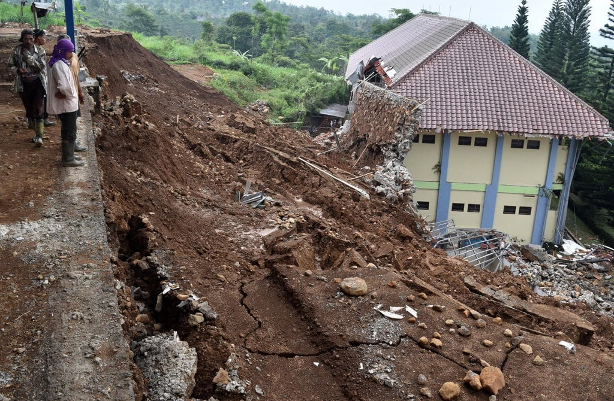

Kegiatan 4 - Adaptasi dan mitigasi terhadap perubahan lingkungan
Suksesi
Suksesi merupakan serangkaian perubahan komunitas yang berlangsung secara lambat dan teratur sehingga membentuk komunitas yang lebih kompleks. Tujuan suksesi yaitu untuk mencapai keseimbangan dalam ekosistem, dalam mencapai keseimbangan terdapat beberapa spesies yang jumlahnya bertambah sementara spesies yang lain berkurang. Terdapat dua jenis suksesi ekologi yaitu suksesi primer dan sekunder
Perbedaan suksesi primer dengan suksesi sekunder
- Suksesi primer: dimulai dari awal karena komunitas sebelumnya telah hancur, misalnya suksesi pada lahan bekas letusan gunung berapi, tsunami, dan lain-lain.
- Suksesi sekunder: suksesi yang melanjutkan sisa-sisa komunitas sebelumnya yang terkena gangguan, misalnya hutan yang terbakar, penebangan hutan, dan lain-lain.

Dinamika Komunitas
Perubahan iklim akan mempengaruhi aspek kehidupan. Dampak dari perubahan iklim akan mempengaruhi bagaimana manusia melakukan adaptasi dan mitigasi perubahan iklim sendiri. Adaptasi merupakan penyesuaian diri terhadap kondisi perubahan lingkungan yang terjadi. Mitigasi merupakan upaya dalam menanggulangi perubahan lingkungan serta memulihkan kembali kondisi lingkungan. Beberapa contoh kegiatan adaptasi dan mitigasi terhadap lingkungan dapat dilihat pada tabel berikut ini:
| Adaptasi terhadap perubahan lingkungan | Mitigasi terhadap perubahan lingkungan |
|---|---|
|
Adaptasi yang dilakukan yaitu untuk menghemat air, menggunakan air bekas yang tidak terkontaminasi bahan kimia untuk menyiram tanaman, membuat sumur resapan. |
Sektor sumber daya air dengan mengelola tata air pada lahan-lahan gambut (Low land) dalam mengurangi potensi kebakaran pada lahan gambut dan mendukung kegiatan penghijauan di daerah aliran sungai. |
|
Adaptasi dalam permasalahan kenaikan permukaan air laut diantaranya merelokasi pemukiman ke tempat yang lebih tinggi, menanam hutan bakau di sekitar perairan. |
Strategi mitigasi dalam mengantisipasi kenaikan permukaan air laut dengan melakukan pengembangan kawasan hutan kita dengan pemilihan berbagai jenis tumbuhan yang tepat dalam menyerap emisi gas rumah kaca. |
|
Adaptasi yang dilakukan terhadap fenomena tersebut ialah memelihara saluran drainase, rumah pompa, dan biopori serta melakukan pengerukan saluran air. |
Langkah mitigasi di bidang pengelolaan sampah yaitu dengan mengurangi jumlah sampah, menghemat pemakaian kantong plastic, dan melakukan pemilahan sampah untuk di daur ulang. |
|

Adaptasi yang dilakukan ialah merelokasi pemukiman ke tempat yang lebih aman, memelihara hutan dengan baik |
Langkah mitigasi penanganan bencana tanah longsor ialah melakukan terasering dengan sistem drainase yang tepat, melakukan penghijauan dengan tanaman yang berakar dalam, dan penutupan rekahan di atas lereng untuk mencegah air cepat masuk. |
|
Adaptasi yang dilakukan membuat gagasan untuk mencegah terjadinya kebakaran, mengupayakan berbagai aktivitas ramah lingkungan, dan menghindari kebiasaan membuka lahan dengan memerun |
Mitigasi dalam sektor kehutanan dengan melakukan reboisasi di kawasan hutan penyangga serta mencegah dan menanggulangi bencana alam. |
Mathematics
Suksesi Krakatau

Krakatau merupakan kepulauan vulkanik yang masih aktif dan berada di
Kecamatan Rajabasa, Kabupaten Lampung Selatan, tepatnya di perairan
Selat Sunda, antara Pulau Jawa dan Sumatra. Awalnya, Krakatau adalah
gunung api setinggi tiga ribu meter yang berdiameter hampir sebelas
kilometer. Krakatau pun lenyap saat erupsi pada 27 Agustus 1883, yang
kejadiannya tidak hanya “mengguncang” Indonesia tetapi juga dunia.
Ledakan dahsyat pada sore hari, 26 Agustus 1883, menghancurkan dua
pertiga bagian utara pulau itu dan menyebabkan tsunami besar yang
melanda garis pantai di dekatnya. Krakatau memuntahkan abu vulkanik
setinggi 50 mil dan menyebabkan langit menjadi gelap yang berlangsung
dari pagi hingga malam. Tak hanya itu, letusan Krakatau bahkan
menutupi atmosfer dan berakibat pada turunnya suhu di seluruh dunia.
Dari 35.500 korban meninggal dunia, 31.000 di antaranya karena tsunami
yang terjadi setelah materi letusan gunung mengalir deras ke laut.
Sebanyak 4.500 orang hangus akibat aliran piroklastik yang menerjang
permukiman setelah berguling di atas permukaan laut. Kemunculan Anak
Krakatau diikuti datangnya kehidupan. Bahkan, sekalipun Anak Krakatau
rajin meletus, hutan makin melebat dan fauna makin beragam. Kepulauan
Krakatau merupakan laboratorium alam pembentukan hutan tropic tanpa
campur tangan manusia. Kolonisasi spesies tumbuhan yang terbentuk
melalui hewan makrofauna, angin dan laut.
Butuh waktu 133 tahun bagi krakatau untuk mengembalikan kondisi
ekologisnya hingga seperti saat ini. Terdapat faktor-faktor yang
mempengaruhi cepat lambatnya proses suksesi di suatu pulau. Faktor
yang paling berpengaruh yaitu laut. Pulau-pulau kecil dipisahkan oleh
laut yang terkadang berjarak hingga ratusan kilometer. Berbeda dengan
pulau besar atau bahkan benua yang lebih memungkinkan terjadinya
suksesi akibat tersebarnya biji-biji tumbuhan oleh faktor angin,
binatang dan juga manusia.
Jawablah pertanyaan berikut dengan tepat
1. Berikut ini disajikan pernyataan, berilah tanda √ jika pernyataan benar dan kosongkan jika pernyataan salah
2. Berdasarkan kasus suksesi di Kepulauan Krakatau, golongkan tipe suksesi yang terjadi dan jelaskan!
3. Bagaimana proses suksesi mampu merubah komunitas yang berawal lahan tidak bervegetasi menjadi tanah bervegetasi?
Jawaban